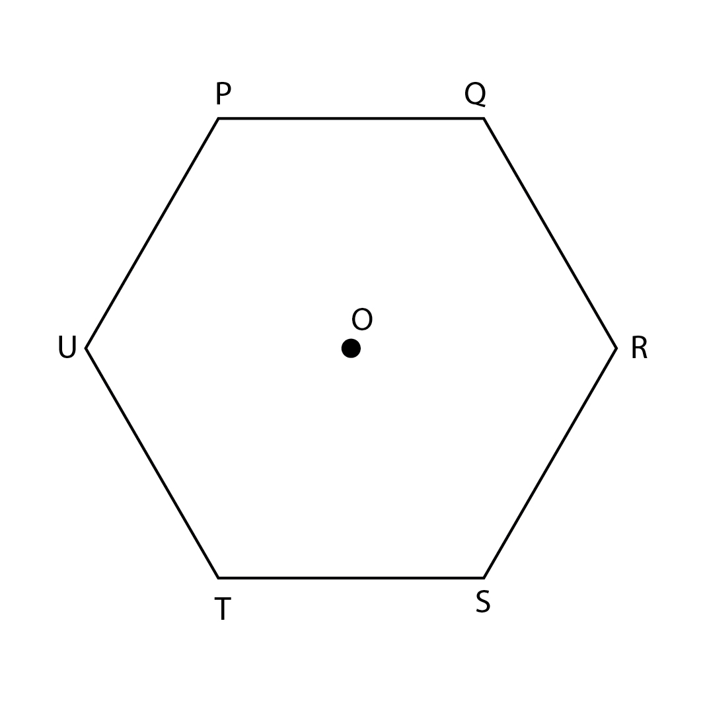
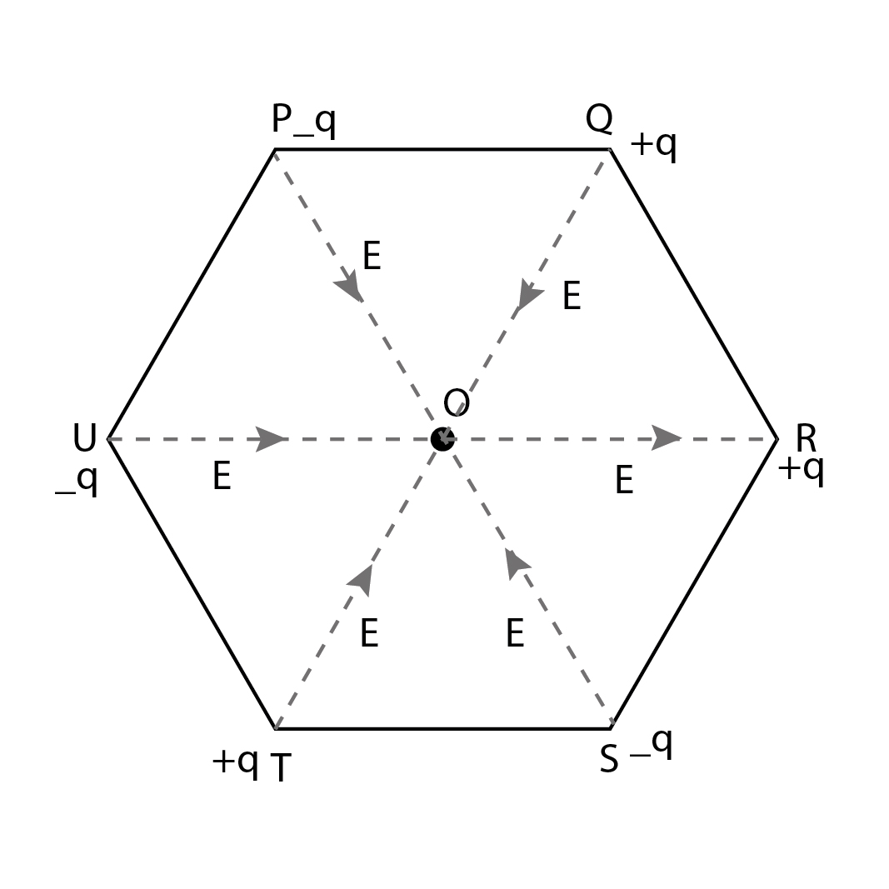

Quiz 1 Answers
Solutions
a) $5\times 10^{-7}$(gained)
b) $5\times10^{7}$(lost) 
c) $2\times 10^{-8}$ (lost)
d) $−8\times10^{−12 }$ (lost)
Solution
Charge acquired by glassrod=$8 \times10^{-12}$ C
Charge on an electron, $e = 1.6 \times 10^{-19}$
Applying the formula, we get
$n \times e = 8 \times 10^{-12}$
$n = \frac{8 \times 10^{-12}}{1.6 \times 10^{-19}}$ =$5 \times 10^{7}$
Hence the number of electron it lost is $5 \times 10^{7}$ glass rod acquires positive charge, hence it is clear that it lost $5 \times 10^{7}$electrons

a) +, +, +, -, -, -
b) -, +, +, +, -, -
c) -, +, +, -, +, -
d) +, -, +, -, +, -
Solution

$\left | E \right |=\frac{k q}{r^{2}}$ Electric field due to P on O is cancelled by electric field S on O. Similarly Electric field due to Q on O is cancelled by electric field due to T on O. The electric field due to R on O is in the direction as that of U on O therefore the net electric field is 2E
a) Gold is easily available in nature
b) Gold is malleable
c) Gold is conducting in nature
d) Gold is cheap
Solution
Explanation: Though gold is a costly metal it is used in electroscope because of the property malleability. This means very thin and light sheets can be obtained from gold simply by hammering or rolling and hence the deflection is possible even for very small charges.
a) Greater
b) Smaller
c) Zero
d) Same
Solution
Proton also has the same amount of charge as that of an electron
a) one fourth
b) four times
c) double
d) one-half times
Solution
From Coloumb's law of electrostatic force we know,
$F=\frac{kq_{1}q_{2}}{r^{2}}$ (Where, k is a constant, q1 and q2 are two charges separated by distance r)
Given r reduced to one half, F same, q1 same, r = r/2 , then q2’ = ?
$F=\frac{kq_{1}q_{2}}{r^{2}} = \frac{kq_{1}q_{2}^{'}}{(\frac {r}{2})^{2}}$
Calculating we get,
q2’ = q2/4
a) 1
b) Zero
c) $\frac{m_{p}}{m_{e}}$
d) $\frac{m_{e}}{m_{p}}$
Solution
F = ma
$\frac{a_{e}}{a_{p}} = \frac{F_{e}/a_{e}}{F_{p}/a_{p}} = \frac{m_p}{m_e} $
(as Fe = Fp )
a) $N^{-1}m^{-2}C^{-2}$
b) $Nm^{-2}C^{2}$
c) $N^{-1}m^{-2}C^{2}$
d) $Nm^{-2}C^{2}$
a) There are only positive charges in the body
b) There are positive as well as negative charges in the body but negative charges are less than positive charges
c) There are equal positive and negative charges in the body but the positive charge lies in outer regions
d) Negative charges are more in the body
a) Transferrable
b) Associated with mass
c) Conserved
d) All of the given options
a) Electric effects only
b) Magnetic effects only
c) Both electric and magnetic effects
d) None of the options given